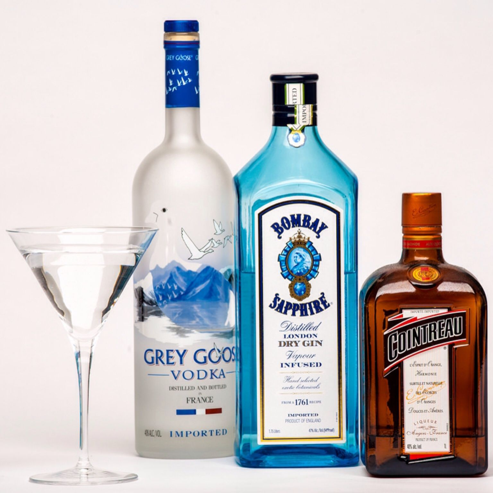

Chairman of the Board Martini
Chairman of the Board Martini

Description...
Ingredients
- 1 1/2 oz. Bombay Sapphire Gin (or similar)
- 1 1/2 oz. Grey Goose Vodka (or similar)
- 1/2 oz Cointreau
- Garnish: Plump Olives (or a lemon twist)
Steps
- Add the gin, vodka and Cointreau into a mixing glass or shaker with ice and combine until well-chilled.
- Strain into martini glass.
- Garnish with 3 plump olives (or twist)